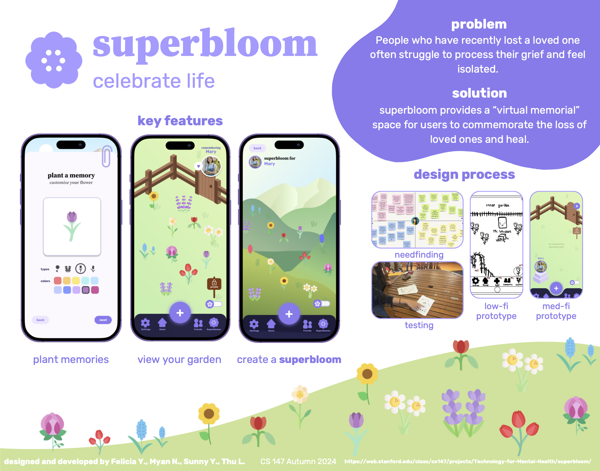

About Me
CS @ Stanford University | Jack Kent Cooke Scholar
Four years experience working in machine learning and software engineering. I have previously worked with startups, research labs, and non-profits.
I like to build things that solve real problems and make the world a cooler place. I'm originally from Dallas, Texas, and I am now based in the Bay Area in California. In my free time, I like talking to my friends and lifting weights.
Fun facts:
- I collect Tong Sui pudding jars (count: 11)
- My calculus teacher's name was Mr. Newton (related to the Isaac Newton!)
- Mint tea and Mint Chocolate Chip ice cream <3
- I like turtles
Projects
design and development of an app with react native
Superbloom is a project I worked on with a team as part of CS 147 and CS 147L at Stanford university. Over the course of 11 weeks, we designed and developed a mental health app to support users in healing from the loss of loved ones. We iterated over an entire design process, with needfinding, interviewing, prototyping, heuristic evaluations, and low, medium, and high-fidelity prototyping.
At the CS 147 Project Expo , across 29 teams, we won:
- 1st Best Visual Design
- 1st Greatest Personal Impact
- 1st Best Music for Concept Video
- 2nd Best Poster
- 3rd Most Novel Product
You can read more about our development process here. Our concept video can be found here.
ethics review tool
As an intern at Stanford's CURIS program, I developed a tool for streamlining research grant feedback, for the 2024 review process for HAI seed grants. I used Python, Jupyter Notebook, OpenAI API, Llama 3.1, and Google Cloud Platform.

misinformation classification model
Class project for CS 224N: Natural Language Processing with Deep Learning. We developed a model to classify misinformation in news articles. We used a RoBERTa model, OpenAI API, and Backpack LM.
.jpg)
Education
Bachelor of Computer Science, Stanford University · Jack Kent Cooke Scholar · June 2026
Coursework:
- CS 224N: Natural Language Processing with Deep Learning
- CS 231N: Computer Vision
- CS 229: Machine Learning
- CS 205L: Continuous Mathematical Methods of Machine Learning
- CS 147: Introduction to Human-Computer Interaction Design
- CS 147L: Human-Computer Interaction Design Studio
- CS 247G: Game Design
- CS 278: Social Computing
- CS 347: Frontiers of Human-Computer Interaction Research
- CS 177: Product Management
- CS 161: Design and Analysis of Algorithms
- CS 106B: Programming Abstractions
- CS 103: Mathematical Foundations of Computing
- CS 109: Introduction to Probability for Computer Scientists
- CS 107: Computer Organization and Systems
- CS 111: Operating Systems Principles
Work Experience
AI Instructor
Inspirit AI · Feb 2025 - Present
- Teaching Python and AI concepts to Bay Area students
Machine Learning Engineer
Conscious Digital Italy · Feb 2024 - Feb 2025
- Developed an LLM for classifying data deletion and access request response statuses to automate privacy law compliance.
- Deployed real-time inference for thousands of data deletion and access requests using AWS.
Software Engineering Intern
Stanford Human-Centered Artificial Intelligence · June 2024 - September 2024
- Developed a tool for streamlining research grant feedback using Python, Jupyter Notebook, OpenAI API, Llama 3.1, and GCP.
- Automated the 2024 review process for HAI seed grants, significantly improving processing efficiency.
Computer Vision Intern
Stanford University School of Medicine, Cardiac Magnetic Resonance Lab · April 2023 - September 2024
- Developed Mask R-CNN to crop cardiac diffusion tensor images (cDTI) for segmentation.
- Built a U-Net neural network using PyTorch to segment MRI heart scans, later refining it with a fine-tuned nnU-Net.
Machine Learning Intern
UT Southwestern Medical Center · June 2021 - Aug 2022
- Developed a CNN using TensorFlow to detect malpositioned catheters in radiographs with 97.3% accuracy.
- Built a BERT model for text classification of hospital narratives for intubations with 98.0% accuracy.
Publications
- Hannum, A., Le, T., Cork, T., & Ennis, D. Deep Learning Automated Segmentation of the Left Ventricle for Spin-Echo Cardiac Diffusion Tensor Imaging (cDTI). ISMRM 2024.
- Stocker, S., Hannum, A., Le, T., Cork, T., Ennis, D. Automated Segmentation and Annotation of Cardiac Diffusion Tensor Images. ISMRM 2025.
Projects
- Mental Health App – iOS/Android app in React Native and JavaScript to support users in healing from the loss of loved ones. View project
- Content Abuse Detection – Trust and safety content moderation pipeline with report handling and text/image analysis using the Perspective API and a Vision Transformer (ViT) in Python.
- Fake News Detection – Text classification with an ensemble approach using RoBERTa, Open AI, and Backpack LM.
Skills
Languages & Frameworks: C++, Python, C, Java, HTML, CSS, JavaScript, React, React Native
Tools & Platforms: Pandas, Numpy, PyTorch, TensorFlow, Keras, MongoDB, Firebase, GCP, AWS